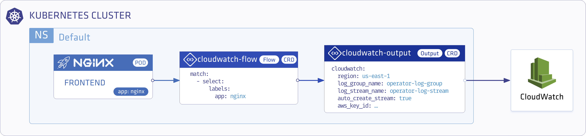
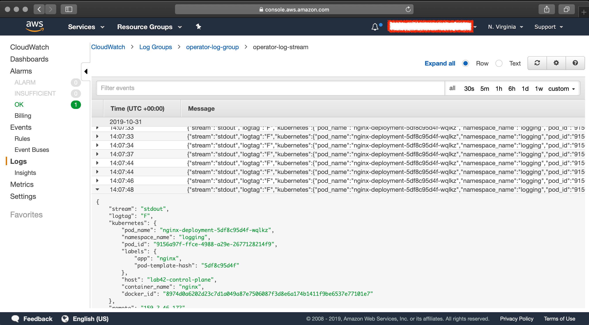

Store Nginx Access Logs in Amazon CloudWatch with Logging operator
This guide describes how to collect application and container logs in Kubernetes using the Logging operator, and how to send them to CloudWatch.
The following figure gives you an overview about how the system works. The Logging operator collects the logs from the application, selects which logs to forward to the output, and sends the selected log messages to the output. For more details about the Logging operator, see the Logging operator overview.

Deploy the Logging operator and a demo Application
Install the Logging operator and a demo application using Helm.
Deploy the Logging operator with Helm
To install the Logging operator using Helm, complete the following steps.
Note: You need Helm v3.8 or later to be able to install the chart from an OCI registry.
-
Install the Logging operator into the logging namespace:
helm upgrade --install --wait --create-namespace --namespace logging logging-operator oci://ghcr.io/kube-logging/helm-charts/logging-operatorExpected output:
Release "logging-operator" does not exist. Installing it now. Pulled: ghcr.io/kube-logging/helm-charts/logging-operator:4.3.0 Digest: sha256:c2ece861f66a3a2cb9788e7ca39a267898bb5629dc98429daa8f88d7acf76840 NAME: logging-operator LAST DEPLOYED: Wed Aug 9 11:02:12 2023 NAMESPACE: logging STATUS: deployed REVISION: 1 TEST SUITE: NoneNote:
-
Helm has a known issue in version 3.13.0 that requires users to log in to the registry, even though the repo is public.
Upgrade to 3.13.1 or higher to avoid having to log in, see: https://github.com/kube-logging/logging-operator/issues/1522
-
If you’re installing the Helm chart from Terraform, reference the repository as
repository = "oci://ghcr.io/kube-logging/helm-charts/"(without thelogging-operatorsuffix). Otherwise, you’ll get a 403 Forbidden error.
-
-
Create AWS
secretIf you have your
$AWS_ACCESS_KEY_IDand$AWS_SECRET_ACCESS_KEYset you can use the following snippet.kubectl -n logging create secret generic logging-cloudwatch --from-literal "awsAccessKeyId=$AWS_ACCESS_KEY_ID" --from-literal "awsSecretAccessKey=$AWS_SECRET_ACCESS_KEY"Or set up the secret manually.
kubectl -n logging apply -f - <<"EOF" apiVersion: v1 kind: Secret metadata: name: logging-cloudwatch type: Opaque data: awsAccessKeyId: <base64encoded> awsSecretAccessKey: <base64encoded> EOF -
Create the
loggingresource.kubectl -n logging apply -f - <<"EOF" apiVersion: logging.banzaicloud.io/v1beta1 kind: Logging metadata: name: default-logging-simple spec: fluentd: {} fluentbit: {} controlNamespace: logging EOFNote: You can use the
ClusterOutputandClusterFlowresources only in thecontrolNamespace. -
Create an CloudWatch
outputdefinition.kubectl -n logging apply -f - <<"EOF" apiVersion: logging.banzaicloud.io/v1beta1 kind: Output metadata: name: cloudwatch-output namespace: logging spec: cloudwatch: aws_key_id: valueFrom: secretKeyRef: name: logging-cloudwatch key: awsAccessKeyId aws_sec_key: valueFrom: secretKeyRef: name: logging-cloudwatch key: awsSecretAccessKey log_group_name: operator-log-group log_stream_name: operator-log-stream region: us-east-1 auto_create_stream: true buffer: timekey: 30s timekey_wait: 30s timekey_use_utc: true EOFNote: In production environment, use a longer
timekeyinterval to avoid generating too many objects. -
Create a
flowresource.kubectl -n logging apply -f - <<"EOF" apiVersion: logging.banzaicloud.io/v1beta1 kind: Flow metadata: name: cloudwatch-flow spec: filters: - tag_normaliser: {} - parser: remove_key_name_field: true reserve_data: true parse: type: nginx match: - select: labels: app.kubernetes.io/name: log-generator localOutputRefs: - cloudwatch-output EOF -
Install log-generator to produce logs with the label
app.kubernetes.io/name: log-generatorhelm upgrade --install --wait --create-namespace --namespace logging log-generator oci://ghcr.io/kube-logging/helm-charts/log-generator
Validate the deployment

If you don’t get the expected result you can find help in the troubleshooting section.